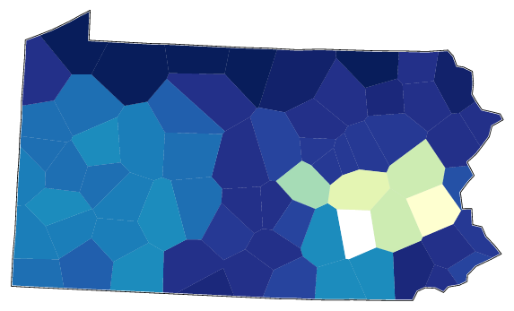
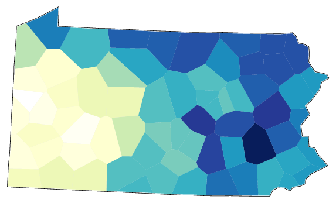
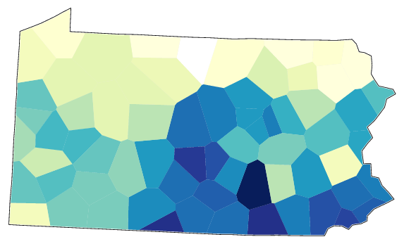
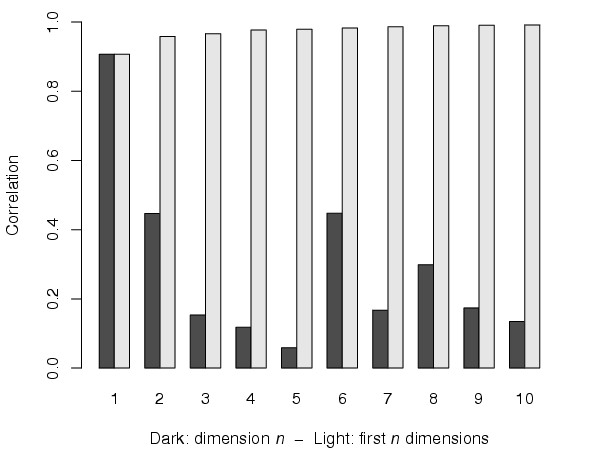

In addition to the map displaying the results of MDS to three dimensions, maps are also created for each of the first dimensions separately. The maps of the two first dimensions correspond to the values in the two-dimensional mds plot (Multidimensional Scaling - mds plots).
The following map displays the results of the first dimension of the MSD of the Pennsylvania data. The first dimension of the MDS mainly seems to separate a small area in the east from the rest of the dialects.
The next maps displays the second dimension. This dimension shows a west--east variation in the data.
The third dimension shows yet another distribution pattern in the data; roughly a north--south split:
A histogram shows the correlation between original linguistic distances and the Euclidean MDS coordinate-based distances cumulatively (light) and for each dimension (dark). These values are also displayed for each map. Usually three dimensions will explain most of the variance.
